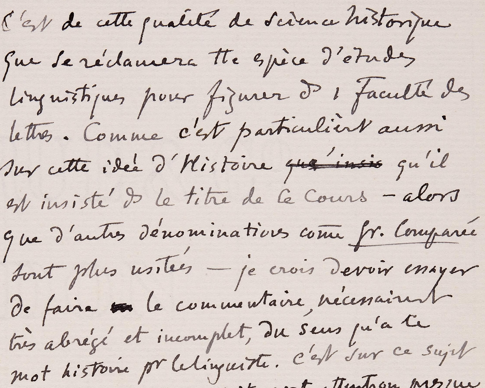
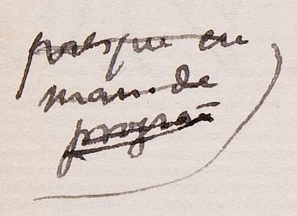
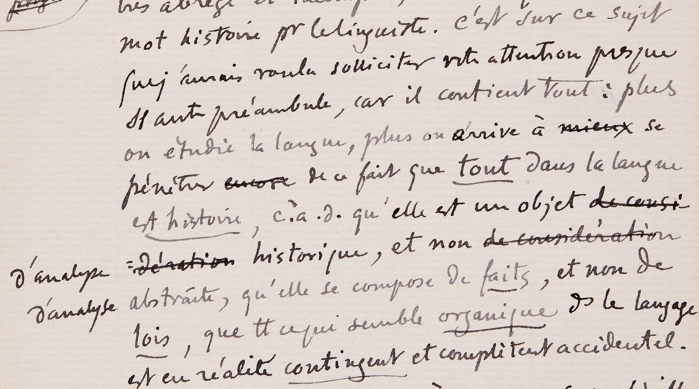
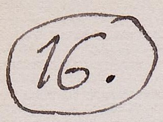
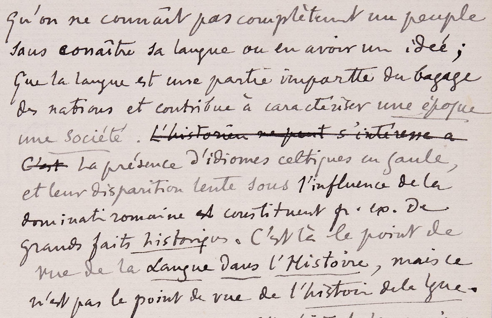
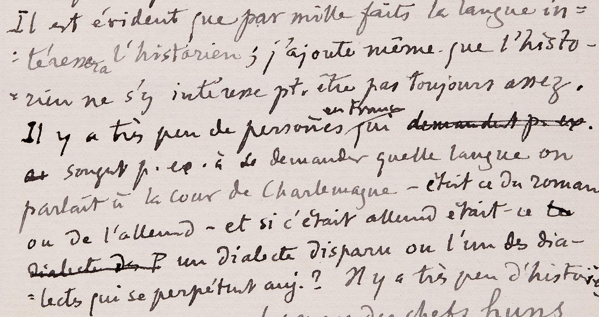

Prolusioni all'università di Ginevra - pagine 15-16
Autore Ferdinand de Saussure | Codifica XML TEI a cura di Carolina Sgherri
Persone
- Nome: Ferdinand de Saussure
- Sesso: M
- Nascita: 1857-11-26
- Morte: 1913-02-22
- Note: Linguista e semiologo svizzero, considerato uno dei fondatori della linguistica moderna. Insegnò all'università di Parigi e a quella di Ginevra. Nella sua opera postuma "Cours de linguistique générale" sono poste le basi della moderna scienza linguistica, in particolare di quella branca conosciuta con il nome di strutturalismo.
- Nome: Carlo I Magno
- Sesso: M
- Nascita: 743-04-02
- Morte: 814-01-28
- Note: Fu re dei Franchi dal 768, re dei Longobardi e primo Imperatore dei Romani. L'appellativo Magno gli fu attribuito dal suo biografo Eginardo.
- Nome: Attila flagello di Dio
- Sesso: M
- Nascita: 406
- Morte: 453
- Note: Fu un condottiero e sovrano unno dal 434 fino alla morte. Durante il suo regno divenne il più irriducibile nemico dell'Impero Romano. Nonostante il suo impero si fosse disgregato alla sua morte, è diventato una figura leggendaria nella storia europea.
Lughi
Gallia
La terra dei Galli, termine che identificava, nel lessico latino, un ampio insieme di popolazioni celtiche continentali.
Francia
Uno stato principalmente situato nell'Europa occidentale, ma che possiede ugualmente territori disseminati su più oceani e altri continenti.
Istituzioni
Facoltà di lettere
Struttura organizzativa di discipline accademiche, che studiano l'uomo e la condizione umana, utilizzando principalmente strumenti analitici, critici oppure speculativi,
Testo
Pagina 15
Il numero 15 all'interno di un cerchio a simboleggiare l'inizio della pagina 15.

Sezione di testo 1
Testo francese, scritto a mano, composto di 11 righe, in buone condizioni. Questa porzione di scritto presenta alcune sezioni di testo barrate, altre sottolineate e una in particolare completamente illegibile a causa di una riscrittura.

C’est de cette qualité de science historique
que se réclamera
linguistiques pour figurer
sur cette idée d’histoire qué insis qu’il
est insisté
que d’autres dénominations comme
sont plus usitées – je crois devoir essayer
de faire un le commentaire, nécessairement
très abrégé et incomplet, du sens qu’a ce
mot histoire pour le linguiste.
È a tale qualità di scienza storica che farà riferimento ogni specie di studio linguistico per figurare in una Facoltà di Lettere. Giacché è su quest’idea di storia che s’insiste particolarmente nell’intitolazione di questo corso – sebbene altre denominazioni, come Grammatica comparata, siano più usate – credo di dover provare a fare un commento, necessariamente molto risicato e incompleto, sul senso che ha questa parola, ‘storia’, per il linguista.
Appunto a lato
Appunto di testo scritto a mano e barrato. L'appunto si trova a sinistra del testo ed è delineato a destra da un semicerchio.
Sezione di testo 2
Testo francese scritto a mano, composto di 10 righe, in buone condizioni. Questa porzione di scritto presenta alcune sezioni di testo barrate e altre sottolineate. Le righe 7 e 8 sporgono a sinistra rispetto al resto del testo a causa di alcune correzioni.

C’est sur ce sujet
que j’aurais voulu solliciter votre attention
presque
on étudie la langue, plus on arrive à mieux se
pénétrer *** de ce fait que tout dans la langue
est histoire,
d’analyse : dèration historique, et non de consideration
d’analyse abstraite, qu’elle se compose de faits, et non de
lois, que
est en réalité contingent et complètement accidentel.
È su questo argomento che avrei voluto sollecitare la vostra attenzione, senza quasi altro preambolo, perché esso ricomprende tutto: più si studia la lingua, più si arriva a prendere coscienza del fatto che tutto nella lingua è storia, cioè che essa è un oggetto di analisi storica, e non di analisi astratta, che si compone di fatti, e non di leggi, che tutto ciò che sembra organico nel linguaggio è in realtà contingente e completamente accidentale.
Sezione di testo 3
Testo francese scritto a mano, composto di 3 righe, in buone condizioni. Questa porzione di scritto presenta alcune sezioni di testo barrate.

Il y a une
1°
manière un peu superficielle
d'entendre que la
scien
:torique, c'est celle qui consiste à observer puélla
C’è un primo modo, un po’ superficiale, d’intendere l’idea che la linguistica sia una scienza storica, ed è quello che consiste nell’osservare
Pagina 16
Il numero 16, seguito da un punto, all'interno di un ovale a simboleggiare l'inizio della pagina 16.
Sezione di testo 1
Testo francese scritto a mano, composto di 11 righe, in buone condizioni. Questa porzione di scritto presenta alcune sezioni di testo barrate e altre sottolineate.
qu'on ne connaît pas complètement un peuple sans connaître sa langue ou en avoir une idée ; que la langue est une partie
che non si conosce completamente un popolo senza conoscerne la lingua, o almeno averne un’idea; che la lingua è una parte importante del bagaglio delle nazioni e contribuisce a caratterizzare un’epoca, una società. La presenza di idiomi celtici in Gallia, e la loro lenta sparizione sotto l’influenza della dominazione romana costituiscono, per esempio, grandi fatti storici. Quello è il punto di vista della Lingua nella Storia, ma non è il punto di vista della Storia della lingua.
Sezione di testo 2
Testo francese scritto a mano, composto di 9 righe, in buone condizioni. Questa porzione di scritto presenta alcune sezioni di testo barrate e altre sottolineate. Le riga 4 presenta un correzione composta di due parole che si trova nello spazio fra la riga 3 e la 4 stessa.

Il est évident que par mille faits
la langue in=
:téressera l'historien
; j'ajoute même que l'historie-
=n ne s'y intéresse
Il y a très peu de personnes en France qui demander
a. songent
parlait à la cour de Charlemagne - était-ce du roman
ou de l'allemand - et, si c'était l'allemand, était-ce la
dialecte de P. un dialecte disparu ou l'un des dia-
=lectes qui se perpétuent aujourd'hui ?
È evidente che per mille fatti la lingua interesserà lo storico; e aggiungo pure che forse lo storico non se ne interessa sempre quanto dovrebbe. Ci sono pochissime persone in Francia, che badino, per esempio, a chiedersi quale lingua si parlasse alla corte di Carlo Magno – se fosse romanzo o germanico – e, se fosse germanico, se era un dialetto sparito o uno dei dialetti che si perpetuano ancora oggi?
Sezione di testo 3
Testo francese scritto a mano, composto di 9 righe, in buone condizioni. Questa porzione di scritto presenta alcune sezioni di testo barrate e altre sottolineate. Le riga 8 sporge a sinistra rispetto al resto del testo e la riga 9 è composta di solamente due parole e un segno di interpunzione che si trovano a destra del foglio.

Il y a très peu d'historiens
qui
remarquent que les noms des chefs Huns,
comme
Attila, ne sont pas des
noms Huns, mais des
noms germaniques, - ce qui est la preuve
d'une
de
tout un état de choses fort intéressant ;
et
pa
en 2˚
lieu que ces noms germaniques .
sant spé-
:cialut
ne sont pas du 1°
dialecte venu,
mais
ne
ou petits,
Ci sono pochissimi storici che notino che i nomi dei capi Unni, come Attila, non sono nomi unni, ma germanici, – il che è la prova di tutto uno stato di cose parecchio interessante; e in secondo luogo che questi nomi germanici non sono del primo dialetto, non sono sassoni o scandinavi, ma sono chiaramente gotici. Ma tutti questi fatti, grandi o piccoli,